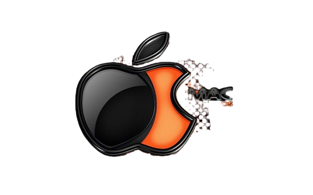

An Operating System (OS) for PCs is the maestro orchestrating a digital symphony, seamlessly
managing hardware resources and facilitating user interaction.
It's the silent force that
transforms hardware components into a harmonious ensemble, making your PC dance to the rhythm of
your commands.
With a sophisticated ballet of algorithms, it empowers users to interact with their machines,
translating their commands into a symphony of binary notes that make computing a delightful
performance.
In essence,
an OS is the maestro, transforming a collection of hardware components
into a harmonious ensemble, creating a digital symphony for users to experience.
Embark on the digital journey by downloading the OS's ISO file and boot it using any software ( eg:Rufus ) , a digital blueprint for your
system's transformation.
Insert the installation medium, like a USB or DVD, into your
system's
port, akin to placing a key into a lock. Follow the on-screen prompts, dancing through menus
like a digital waltz, checking dishes, selecting preferences, and confirming choices. Let the
installation wizard
cast its spell, transforming your hardware into a personalized realm of computing possibilities.
Finally,
witness the birth of your digital companion, ready to obey your commands in the vast
landscape of the operating system.

Windows is a graphical user interface (GUI) based operating system developed by Microsoft
Know MoreLinux is a Unix-like, open source and community-developed operating system for computers.
Know MoreChromeOS Flex is a fast, secure, cloud-first, operating system for Macs and PCs.
Know More